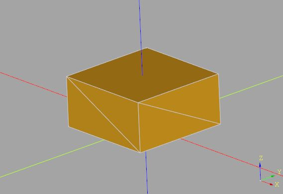
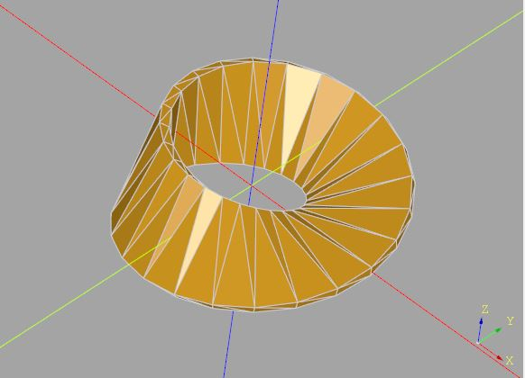

多面體版本 sweep
November 27, 2021CadQuery 安裝後就有 NumPy，既然如此，如果撰寫程式時，適合用 NumPy 來表現時，就可以善用。
實作 sweep
例如，雖然 CadQuery 的 Workplane 提供了 sweep 方法，然而這個方法是基於 BREP，有時候，我就是會想要控制面，或者就是想要多面體風格，這時有個多面體版本的 sweep 就很適用。
from cadquery import Vector, Edge, Wire, Solid, Shell, Face, Workplane
def polyhedron(points, faces):
def _edges(vectors, face_indices):
leng_vertices = len(face_indices)
return (
Edge.makeLine(
vectors[face_indices[i]],
vectors[face_indices[(i + 1) % leng_vertices]]
)
for i in range(leng_vertices)
)
vectors = [Vector(*p) for p in points]
return Solid.makeSolid(
Shell.makeShell(
Face.makeFromWires(
Wire.assembleEdges(
_edges(vectors, face_indices)
)
)
for face_indices in faces
)
)
# 多面體版本的 sweep
def sweep(sections):
# 連接第 s 與 s + 1 個切面的側邊面
def _revolving_faces(s, leng_per_section):
faces = []
for i in range(leng_per_section):
faces.append((
leng_per_section * s + i % leng_per_section,
leng_per_section * s + (i + 1) % leng_per_section,
leng_per_section * (s + 1) + i % leng_per_section
))
faces.append((
leng_per_section * s + (i + 1) % leng_per_section,
leng_per_section * (s + 1) + (i + 1) % leng_per_section,
leng_per_section * (s + 1) + i % leng_per_section
))
return faces
leng_sections = len(sections)
leng_per_section = len(sections[0])
faces = []
# 第一個切面
faces.append(tuple(range(leng_per_section))[::-1])
# 側邊面
for s in range(leng_sections - 1):
faces.extend(_revolving_faces(s, leng_per_section))
# 最後一個切面
faces.append(tuple(range(leng_per_section * (leng_sections - 1), leng_per_section * leng_sections)))
sects = [p for section in sections for p in section]
return polyhedron(sects, faces)
r = sweep([
[(10, 10, 0), (-10, 10, 0), (-10, -10, 0), (10, -10, 0)],
[(10, 10, 10), (-10, 10, 10), (-10, -10, 10), (10, -10, 10)]
])
show_object(r)
想要建立這個 sweep 很簡單，被指定的多個切面，頂點數必須是相同的（頂點數不同就是要實作 loft），因此面的組合很有規律，註解中已經說明了哪個部份是組合哪些面，這邊先簡單地指定兩個面，純綷測試一下是否能運作，這會顯示以下的結果：

結合 NumPy
只不過，那個 _revolving_faces 有點不好閱讀啊？因為切面的頂點數是相同的，你只要計算出第一個切面與第二個切面的側邊面組合，然後每次都將其中索引加上切面頂點數的倍數，就是可以得到後續每一層側邊面…別急著跑迴圈來做這件事…改用 NumPy 如何？
def sweep(sections):
# 第一個切面與第二個切面的側邊面組合
def _revolving_faces0(leng_per_section):
faces = []
for i in range(leng_per_section):
rbi = (i + 1) % leng_per_section
lti = leng_per_section + i
rti = leng_per_section + rbi
faces.extend(((i, rbi, lti), (rbi, rti, lti)))
return faces
leng_sections = len(sections)
leng_per_section = len(sections[0])
faces = []
# 第一個切面
faces.append(tuple(range(leng_per_section))[::-1])
# 側邊面
faces0 = _revolving_faces0(leng_per_section)
faces.extend(faces0)
# 運用 NumPy
np_faces0 = numpy.array(faces0)
for s in range(1, leng_sections - 1):
faces.extend(map(tuple, (np_faces0 + (s * leng_per_section))))
# 最後一個切面
faces.append(tuple(range(leng_per_section * (leng_sections - 1), leng_per_section * leng_sections)))
sects = [p for section in sections for p in section]
return polyhedron(sects, faces)
程式看來簡潔了一下，這還有另一個好處，如果你的切面數很多，或許還有機會透過 NumPy 運行地快一些。
莫比烏斯帶
既然有了個多面體版本的 sweep，來個〈莫比烏斯帶〉吧！
from cadquery import Vector, Edge, Wire, Solid, Shell, Face, Workplane
import numpy
from math import cos, sin, radians
class Matrix3D:
def __init__(self, m):
# self.wrapped 是包裹的 numpy.ndarray 實例
if isinstance(m, numpy.ndarray):
self.wrapped = m
else:
self.wrapped = numpy.array(m)
# Post-Multiplication (Right-Multiplication)
def __matmul__(self, that):
return Matrix3D(self.wrapped @ that.wrapped)
def transform(self, v):
vt = (v.x, v.y, v.z, 1) if isinstance(v, Vector) else v + (1,)
return tuple((self.wrapped @ vt)[:-1])
# 平移矩陣
def translation(v):
return Matrix3D(_translation(v))
# 繞 x 軸旋轉矩陣
def rotationX(angle):
return Matrix3D(_rotationX(angle))
# 繞 y 軸旋轉矩陣
def rotationY(angle):
return Matrix3D(_rotationY(angle))
# 繞 z 軸旋轉矩陣
def rotationZ(angle):
return Matrix3D(_rotationZ(angle))
# 繞指定軸旋轉矩陣
def rotation(direction, angle):
return Matrix3D(_rotation(direction, angle))
def _translation(v):
vt = (v.x, v.y, v.z) if isinstance(v, Vector) else v
return numpy.array([
[1, 0, 0, vt[0]],
[0, 1, 0, vt[1]],
[0, 0, 1, vt[2]],
[0, 0, 0, 1]
])
def _rotationX(angle):
rad = radians(angle)
c = cos(rad)
s = sin(rad)
return numpy.array([
[1, 0, 0, 0],
[0, c, -s, 0],
[0, s, c, 0],
[0, 0, 0, 1]
])
def _rotationY(angle):
rad = radians(angle)
c = cos(rad)
s = sin(rad)
return numpy.array([
[c, 0, s, 0],
[0, 1, 0, 0],
[-s, 0, c, 0],
[0, 0, 0, 1]
])
def _rotationZ(angle):
rad = radians(angle)
c = cos(rad)
s = sin(rad)
return numpy.array([
[c, -s, 0, 0],
[s, c, 0, 0],
[0, 0, 1, 0],
[0, 0, 0, 1]
])
def sweep(sections):
def _revolving_faces0(leng_per_section):
faces = []
for i in range(leng_per_section):
rbi = (i + 1) % leng_per_section
lti = leng_per_section + i
rti = leng_per_section + rbi
faces.extend(((i, rbi, lti), (rbi, rti, lti)))
return faces
leng_sections = len(sections)
leng_per_section = len(sections[0])
faces = []
faces.append(tuple(range(leng_per_section))[::-1])
faces0 = _revolving_faces0(leng_per_section)
faces.extend(faces0)
np_faces0 = numpy.array(faces0)
for s in range(1, leng_sections - 1):
faces.extend(map(tuple, (np_faces0 + (s * leng_per_section))))
faces.append(tuple(range(leng_per_section * (leng_sections - 1), leng_per_section * leng_sections)))
sects = [p for section in sections for p in section]
return polyhedron(sects, faces)
def polyhedron(points, faces):
def _edges(vectors, face_indices):
leng_vertices = len(face_indices)
return (
Edge.makeLine(
vectors[face_indices[i]],
vectors[face_indices[(i + 1) % leng_vertices]]
)
for i in range(leng_vertices)
)
vectors = [Vector(*p) for p in points]
return Solid.makeSolid(
Shell.makeShell(
Face.makeFromWires(
Wire.assembleEdges(
_edges(vectors, face_indices)
)
)
for face_indices in faces
)
)
def mobius_strip(radius, frags):
profile = [(10, -1, 0), (10, 1, 0), (-10, 1, 0), (-10, -1, 0)]
translationX20 = translation((radius, 0, 0))
rotationX90 = rotationX(90)
angle_step = 360 / frags
profiles = []
for i in range(frags + 1):
m = rotationZ(i * angle_step) @ translationX20 @ rotationX90 @ rotationZ(i * angle_step / 2)
profiles.append([m.transform(p) for p in profile])
return sweep(profiles)
r = mobius_strip(20, 24)
show_object(r)
這會顯示以下的結果：
